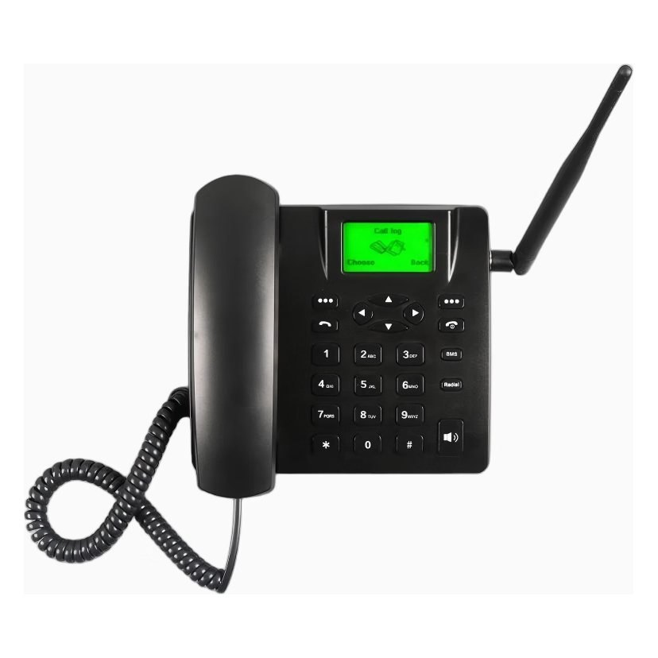

Home / Communication / Rugged smartphone with satellite messaging

Communication
Rugged smartphone with satellite messaging
Rugged 5G smartphone with satellite messaging for site managers and crew leaders who need to send emergency messages even on sites without coverage.
Technical data
| Cellular | 5G |
|---|---|
| Display | 6.78 in, 120 Hz |
| Memory | 12 GB RAM / 512 GB |
| Satellite function | Messaging, subscription |
| Ingress protection | IP68/IP69K |
| Ruggedness | MIL-STD-810H |
| Customs tariff number (HS) | 85171300 |
EU standards and regulations
RED 2014/53/EURadio Equipment Directive (CE marking for radio equipment)EN 301 908-1IMT cellular (LTE/5G), harmonised standardEN 301 489-52EMC for cellular mobile terminals (part 52)EN 62368-1Safety of audio/video, information and communication technology equipmentEN 50566 / EN 62209-1Human exposure to fields from hand-held and body-mounted wireless devices (SAR)EN 18031-1Cybersecurity of internet-connected radio equipment (RED Delegated Regulation (EU) 2022/30)(EU) 2023/1669 + 2023/1670Energy label and ecodesign for mobile phones (repairability, updates, spare parts)(EU) 2023/1542EU Battery RegulationEN 60529Degrees of protection provided by enclosures (IP code)
More products in this category
Tiantong/BeiDou satellite phone (Asia-Pacific only)
Rugged smartphone with satellite voice and text messagingRugged 5G smartphone with satellite voice and text messaging for use without mobile coverage, but without global coverage.
Satellite messenger (Iridium SBD, GNSS)Compact two-way messaging device over the Iridium network for lone working and sites without mobile coverage, without voice.
PMR446 handheld two-way radio (licence-free, site radio)Licence-free analogue handheld radio for communication between site management, crews and machine operators on site.
DMR446 digital handheld radio (licence-free)Licence-free digital handheld radio with clear speech up to the edge of range, even amid machine noise.
4G/LTE PoC network radio (push-to-talk over cellular, SIM)Handheld radio that works over the mobile network and connects several sites and locations independent of radio range.
Two-way radio headset with PTT (ear hook)Discreet ear-hook headset with lapel PTT microphone and 2-pin plug for PMR446, DMR and business radios.
6-bay desktop multi-charger for handheld two-way radios (Li-ion)
Replacement Li-ion battery for handheld radios (2,000-2,600 mAh, model-specific)
Rugged IP67 PMR446 radio kit, 6 radios with 6-bay charger (headsets optional)
Speaker microphone with PTT for handheld radios (model-specific plug)Shoulder mic for two-way radios with PTT key.

Outdoor 4G LTE router with SIM slot and PoE (Cat4, 300 Mbps)Weatherproof LTE CPE for site and remote-location internet.

Wi-Fi 6 ceiling access point with PoE (dual-band, 1,500 Mbps)Discreet PoE access point for offices, hotels and practices.

4K USB conference camera with autofocus (EPTZ)USB 3.0 room camera for meeting rooms.

Cat6 RJ45 patch cable (UTP/S-FTP, 3 m)Network patch lead for office and rack.
Battery PA trolley speaker 15 inch with BluetoothMobile sound for events, training and sites.
8-port Gigabit PoE switch with SFP uplinkPoE switch for cameras, access points and VoIP.

4G VoLTE desk phone with SIM (landline replacement)SIM phone for sites without a landline.